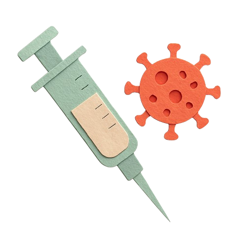
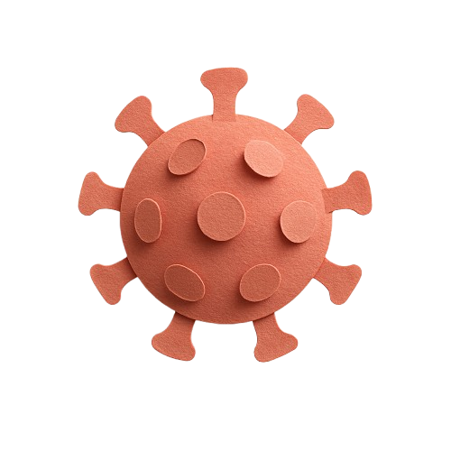
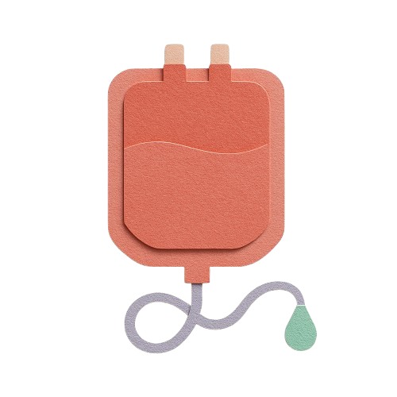
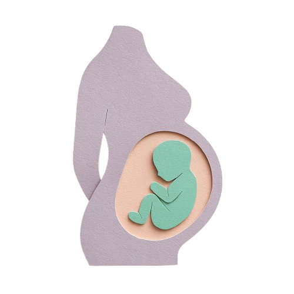
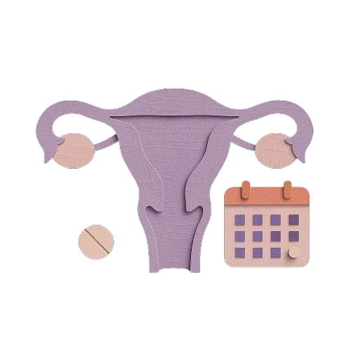

Accedé a campañas activas e información de salud pública en la región
Información oficial, actualizada y accesible sobre prevención, vacunación y programas provinciales.

Alerta Sarampión
Campaña focalizada contra sarampión en contexto de brote 2025 en AMBA.

Campaña Dengue
Prevención y vacunación.

Covid
Programa de atención a personas que atravesaron Covid.

Donar sangre salva vidas
Todos los días hay personas que necesitan una transfusión de sangre.

Maternidad y Salud Perinatal
Recomendaciones y pautas de alarma. Ley de parto respetado. Acompañamiento en lactancia y crianza.

Aborto
La interrupción del embarazo es un derecho y lo ampara la Ley N° 27.610 en todo el territorio nacional y la provincia de Buenos Aires.